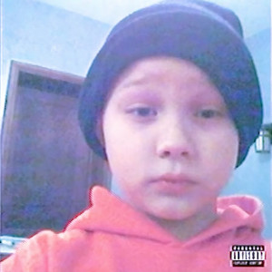

Early Life Crysis - Nettspend
Negli ultimi giorni la scena rap e trap ha visto l'uscita di diversi nuovi progetti che stanno attirando l'attenzione dei fan. Tra i più discussi c'è il nuovo album Early Life Crisis del rapper americano Nettspend, pubblicato all'inizio di marzo. Il progetto contiene oltre venti tracce e rappresenta un nuovo passo nella carriera dell'artista, che negli ultimi anni è diventato una delle voci più interessanti della nuova generazione rap. Le sonorità dell'album mescolano elementi di trap e rage rap, con bassi distorti, sintetizzatori aggressivi e flow molto sperimentali. All'interno del disco sono presenti anche collaborazioni con artisti come YoungBoy Never Broke Again e OsamaSon, che arricchiscono ulteriormente il progetto. I testi parlano spesso delle pressioni della fama, della crescita personale e delle difficoltà di una generazione molto giovane che si affaccia al mondo della musica. Grazie a queste caratteristiche, l'album sta già generando milioni di streaming sulle piattaforme digitali e molte discussioni online tra gli appassionati del genere. Uscite come questa dimostrano come la scena trap continui ad evolversi rapidamente, con nuovi artisti pronti a sperimentare suoni e stili sempre più innovativi.
